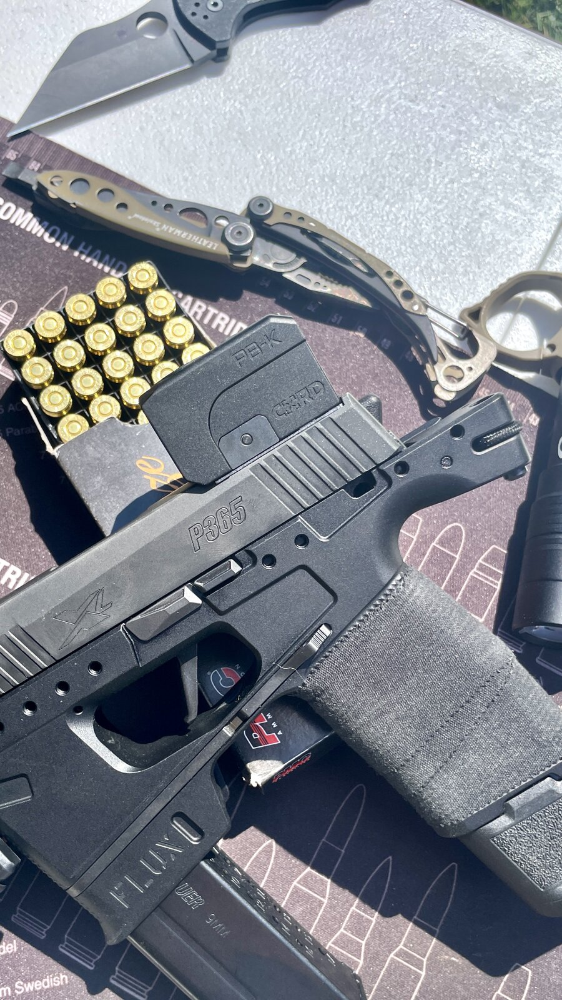
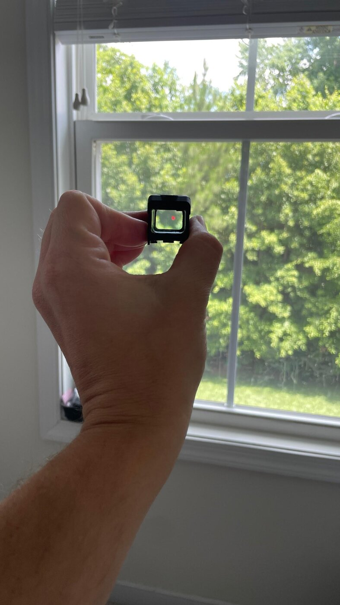
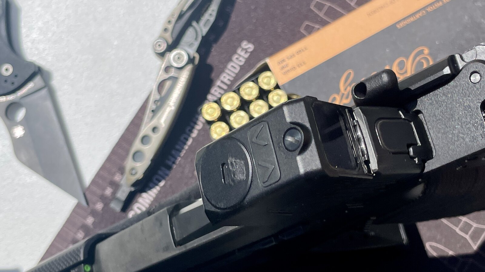
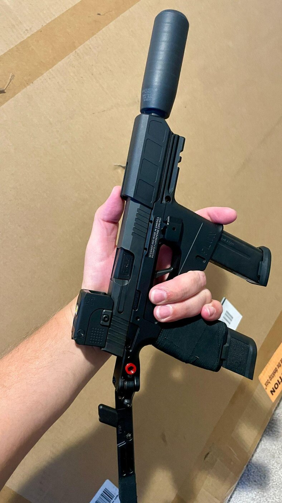
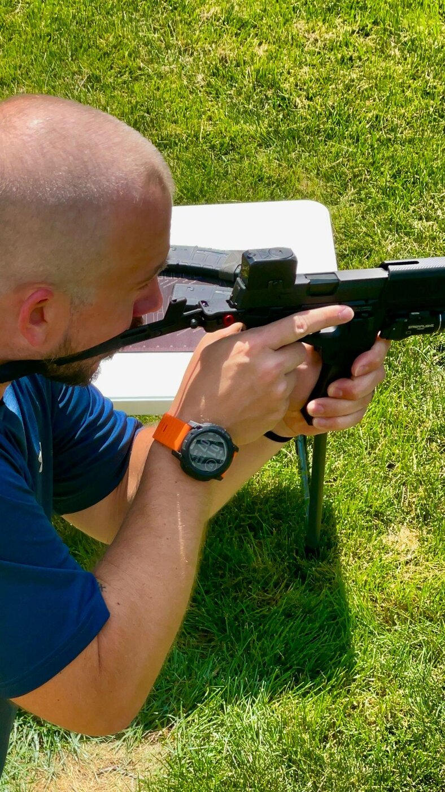
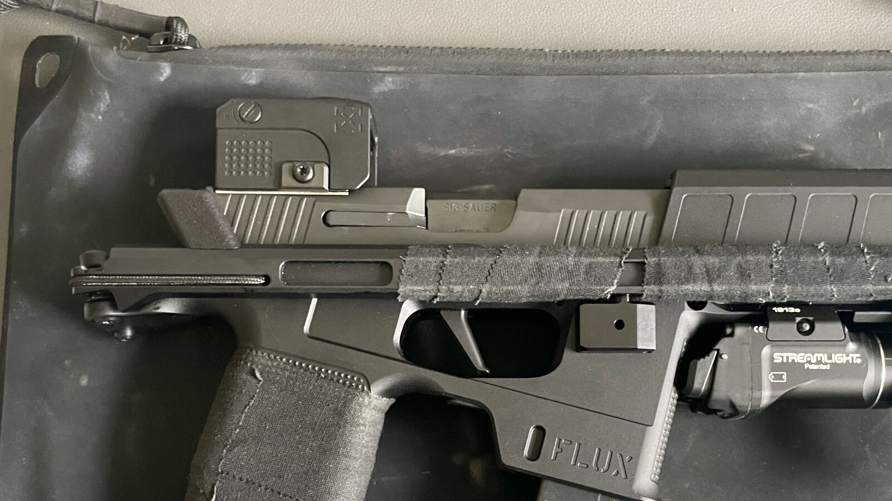

There's been a noticeable shift in the pistol red dot market toward enclosed emitter optics, and it's not hard to understand why. When you're carrying a handgun against your body every day, the optic is going to spend a lot of time exposed to the same dust, lint, fingerprints, and general pocket debris that comes with daily carry. An enclosed emitter eliminates one of the potential weak points of an open emitter design by protecting the emitter itself from the outside environment.
The Lead & Steel Pandora PB-K Micro Red Dot Sight is designed around that concept while keeping the optic small enough for compact carry pistols. My test optic came to me from the folks at Lead & Steel for evaluation, along with the company's GHOST plate. I mounted the Pandora on a Sig P365 slide that I used in two different configurations, first as a P365XL and later as part of my Flux Defense P365 Raider setup.
That gave me the opportunity to spend time with the optic in more than one role. While both setups start with the same basic P365 platform, they represent two very different ways of using the same pistol and optic combination.
One thing that continues to surprise me when I open a new optic's rugged case is just how small these things can be. That is particularly true with optics designed for compact carry pistols using the RMSc footprint. The Pandora PB-K is a good example of just how much capability manufacturers are fitting into a package that is small enough to disappear on a compact pistol slide.
The other thing that caught my attention is that Lead & Steel offers the Pandora PB-K as a US designed and developed enclosed emitter optic. As enclosed emitter sights continue to gain traction with people who carry concealed, having another option in this category is worth a closer look.
So, after spending time with the Pandora PB-K mounted to both a P365XL and a Flux Raider, how does this compact enclosed emitter optic perform?
Small Optic, Big Enough Feature Set
One of the first things I noticed about the Pandora PB-K was just how small it is.
That's hardly surprising considering the optic's intended role, but it's still something I notice every time I pull a compact pistol optic out of its case. The rugged case makes the optic look like it's going to be substantially larger than it actually is. Once you pull it out, you're left wondering how something that small is supposed to contain everything needed to function as a red dot.

The RMSc footprint has become a common mounting standard for small carry pistols, and the Pandora PB-K fits right into that category. On my P365 slide, the optic doesn't overwhelm the pistol or turn it into something that feels like it's carrying a much larger sight.
That's important to me because one of the reasons to run a compact pistol is to keep the overall package compact.
The Pandora manages to provide an enclosed emitter without giving up the small form factor that makes these micro pistol optics appealing in the first place.
Controls That Make Sense
One of the first things I noticed about the Pandora PB-K was the brightness controls. They're intuitive to use, but what I appreciate more is how Lead & Steel integrated them into the optic. The buttons are flush with the body rather than protruding above the surface.
That may seem like a small detail, but on a carry optic, I think it's a smart design choice. Anything that sticks out from the optic has the potential to get bumped when the pistol is being carried, handled, or shoved into a case. Keeping the controls recessed eliminates one more thing I have to worry about.

The reticle options are another feature I appreciated.
An optic this size is likely going to spend most of its life on a compact pistol intended for relatively close engagements. In that situation, I can see the appeal of the larger MOA ring. When you're dealing with a high stress situation, having a large aiming reference that you can quickly put over the target makes a lot of sense.
But the Pandora PB-K doesn't lock you into that approach.
I used the single dot reticle when I zeroed the optic at 25 yards, and I also found it useful when I wanted to be more precise at longer distances. Being able to change between the larger ring and a traditional single dot gives the optic some flexibility without making the reticle unnecessarily complicated.
For me, that's one of the better features of the Pandora. It gives you a reticle that's optimized for quickly finding your aiming point while still allowing you to switch to something more precise when the situation calls for it.
A Surprisingly Open View
Another thing I liked about the Pandora PB-K was the amount of usable window I could see through the optic.
Some enclosed emitter optics have fairly thick walls surrounding the viewing window. There's an obvious reason for that. More material around the optic can provide additional protection, and if you're building an optic specifically for hard use, durability is going to be a major consideration.
The Pandora takes a somewhat different approach.
The viewing window isn't heavily shrouded by thick walls, which makes the optic feel less obstructed when you're looking through it. I prefer that from a shooting perspective. There's less material competing for my attention when I'm trying to find the dot and get the pistol on target.
There is a tradeoff, though.
I can't look at the Pandora's relatively open design and tell you that it should be expected to take the same abuse as an optic with substantially more material protecting the window. That's not something I encountered in my testing, but it's worth acknowledging.
I also don't find myself routinely abusing my optics in particularly harsh environments, so for the way I use a pistol mounted red dot, I like the balance Lead & Steel struck here.
That doesn't mean I'd call the Pandora indestructible. It means I appreciate the additional visibility through the window, and for my use, I'd rather have that than an optic surrounded by a large amount of material that isn't doing much for my sight picture.
The Advantage of an Enclosed Emitter
The enclosed emitter design made even more sense to me once I put the Pandora on my Flux Defense P365 Raider.

My Raider is equipped with a Stealth Additive Works Shiv and a 6.5 inch True Precision barrel, and I've spent some time shooting it suppressed. I didn't put an enormous number of rounds through it in that configuration during this review, but anyone who has spent time shooting suppressed knows that keeping an optic clean can become part of the process.
The advantage of the enclosed emitter is pretty simple here. If the lens gets dirty, I can wipe it off. I'm not having to worry about debris, lint, or residue getting into an exposed emitter.
That's one of the reasons I think enclosed emitter optics make so much sense for concealed carry. Your pistol spends a lot of time close to your body, and clothing has a funny way of finding its way into places you wouldn't expect. An enclosed emitter removes one more potential source of problems.
It's also one of those features that doesn't necessarily seem important until you've dealt with the problem it's designed to solve.
An open emitter can work perfectly well, but when something gets between the emitter and the lens, the problem is immediately apparent. An enclosed design takes that concern off the table.
From the P365XL to the Raider
I intentionally didn't limit the Pandora to one configuration during testing.
I initially mounted it to a Sig P365 slide that I ran as a P365XL. That gave me a fairly conventional setup for evaluating a micro red dot. The optic is right at home on a compact carry pistol, and that's clearly the kind of application where its size and enclosed emitter design make the most sense.
On days when I'm not running the Raider, that same P365XL setup is what actually leaves the house with me, and more often than not it rides in my Helikon Urban Courier Bag instead of on the belt. The Pandora's small footprint doesn't add any noticeable bulk to that setup either, which matters when the whole point of carrying in a bag is keeping the profile low.
I then moved that same setup over to my Flux Defense P365 Raider.
The Raider obviously changes the equation. It's still based around the P365 platform, but the overall configuration is very different from a conventional concealed carry pistol. With the Pandora mounted, I was able to see how the optic worked when the pistol was being used in a completely different role.
I would have liked to move the optic farther forward on the Raider using the Forward Optic Mount, but I didn't have the discretionary funds to get one in time for this review. So that's one experiment I'll have to save for another day.
Even without that setup, I got a good feel for how the Pandora worked across both configurations.
Zeroing the Pandora
I zeroed the Pandora at 25 yards using the single dot reticle.
That might sound like a somewhat unnecessary distinction for a micro red dot intended for a compact pistol, but it's actually where I appreciated having the reticle options the most.
The larger ring makes a lot of sense when you're focused on quickly getting the pistol on target. But when I'm actually trying to establish a zero, I prefer having a clean single aiming point.
It's also useful when shooting farther than the distances where a compact carry pistol is normally expected to be used.
I'm not suggesting that the Pandora suddenly turns a P365 into a precision rifle optic. That's obviously not what it's designed to do. But having the ability to change the reticle gives me more flexibility than I would have with an optic that only offered a single large aiming reference.

The GHOST Plate
My test package also included Lead & Steel's GHOST plate, which gave me the opportunity to evaluate the optic and mounting solution together.
For a small pistol optic, the mounting interface matters just as much as the optic itself. There's not much room to work with on a P365 slide, and everything has to fit together without adding unnecessary bulk.

The Pandora and GHOST plate made for a compact package on the P365 slide, which is exactly what I want to see from this type of setup.
I'd rather have the optic and plate disappear into the overall profile of the pistol than have the sight feel like something that was simply bolted onto the top of it.
The Raider in these photos is also running a Streamlight TLR-7 Sub, and the pairing works well together. Neither one crowds the other on a chassis that's already asking a lot out of a compact pistol platform. I put that light through its own testing alongside a couple of other Streamlight models, which you can read about in my Streamlight TLR comparison.
A Growing Enclosed Emitter Market
I'm appreciative of Garrett and the folks at Lead & Steel for sending the Pandora PB-K out to me for testing.
The compact enclosed emitter market is interesting because it's a category where Holosun has established a pretty significant presence. It's not hard to see why. They've produced a number of popular optics that have become common sights on compact carry pistols.
That makes it even more interesting to see other manufacturers developing products in this space.
Competition is good for consumers, especially when companies aren't simply copying what already exists.
The Pandora PB-K gives people another option for a small enclosed emitter optic, and in my experience with it, Lead & Steel has made some thoughtful decisions about how that optic should work.
The flush controls, multiple reticle options, relatively open viewing window, and compact footprint all contribute to an optic that feels purpose built for the pistols it's designed to ride on.
Final Thoughts
After spending time with the Lead & Steel Pandora PB-K on both a P365XL and my Flux Defense P365 Raider, I think the optic makes a compelling case for itself in a crowded market.
The biggest selling point for me isn't any single feature. It's the combination of features in a package that remains genuinely small.
The enclosed emitter makes sense for a concealed carry pistol. The flush brightness controls are well thought out. The multiple reticle options give you the ability to choose between a large aiming reference for quick shooting and a simple dot for zeroing and more precise work. And the relatively open viewing window gives me a sight picture that I prefer over some of the more heavily shrouded enclosed optics I've seen.
There are tradeoffs. The less heavily protected window may not be the choice I'd make if I expected the optic to regularly endure serious abuse. And while I was able to get some time behind the optic in a suppressed Raider configuration, I didn't put it through an exhaustive durability test or run enough suppressed rounds to make any sweeping claims about its performance in that environment.
But that's also the point of a review like this. I'm not going to tell you that I destroyed the thing testing it when I didn't.
What I can tell you is that after using the Pandora PB-K on two different P365 configurations, I liked the way it worked. It's compact, the controls are well designed, the reticle options are useful rather than gimmicky, and the enclosed emitter provides a practical advantage for a pistol that's going to spend time around clothing, dust, lint, and, in my case, occasionally suppressed fire.
I could also see the Pandora PB-K finding a home outside of the pistol world. Its small footprint and enclosed emitter design would make it an interesting option as a secondary optic on a rifle. Whether mounted at an offset angle or piggybacked at the 12 o'clock where a backup aiming solution is needed, the Pandora gives you a capable enclosed emitter sight without adding much size or weight to the rifle.
That's another area where I think the compact size of the Pandora works in its favor. A secondary optic shouldn't become the dominant feature of the rifle, and the Pandora is small enough that it can provide that additional capability without turning the setup into a collection of optics. Unfortunately, I didn't have a capable mount at the time of testing.
I'm also glad to see companies like Lead & Steel entering a market that has become heavily dominated by Holosun. More competition means more choices, and more choices force manufacturers to keep innovating.
The Pandora PB-K doesn't need to reinvent the pistol red dot to be worthwhile. It just needs to execute the fundamentals well while bringing a few thoughtful design choices to the table.
After carrying and shooting with it, I think Lead & Steel has done exactly that.
The Pandora PB-K is a small, well thought out enclosed emitter optic that doesn't ask you to give up capability for size. Flush controls, a dual reticle setup, and a more open viewing window than most enclosed designs make it a legitimate option in a category Holosun has dominated for years. It's not built to take the same abuse as a heavily shrouded optic, but for daily carry on a P365XL or a suppressed Raider build, it's earned a spot on the slide.